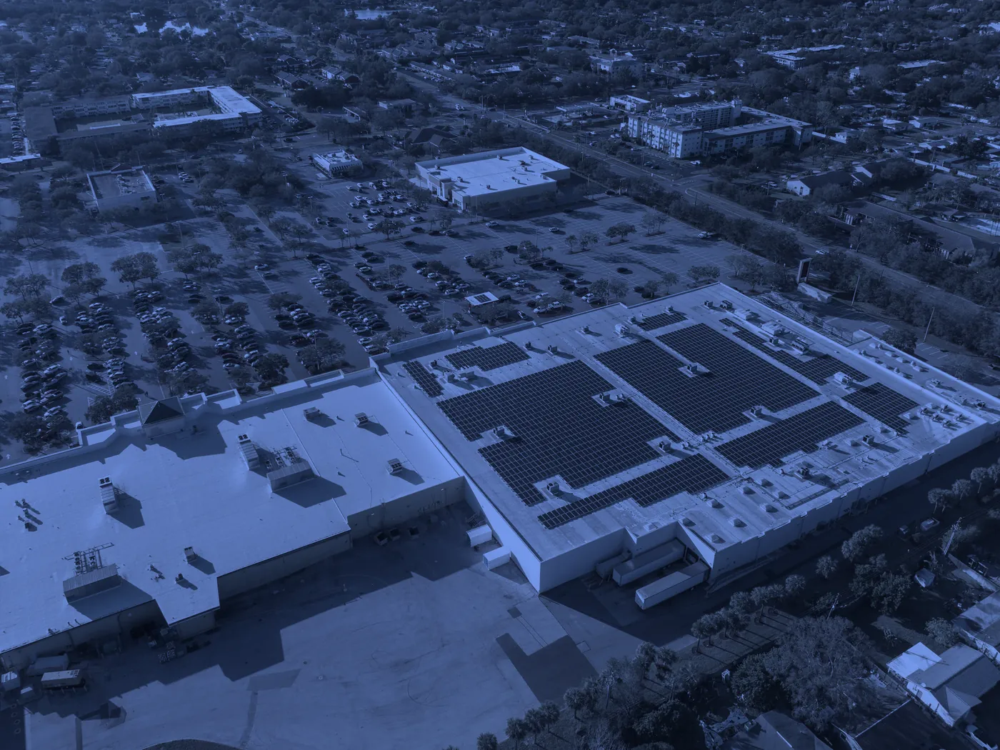
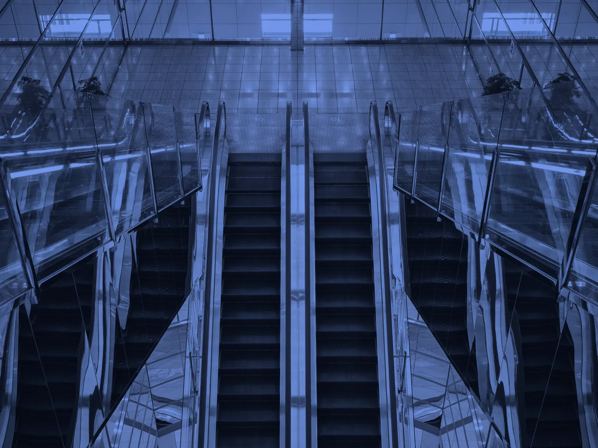
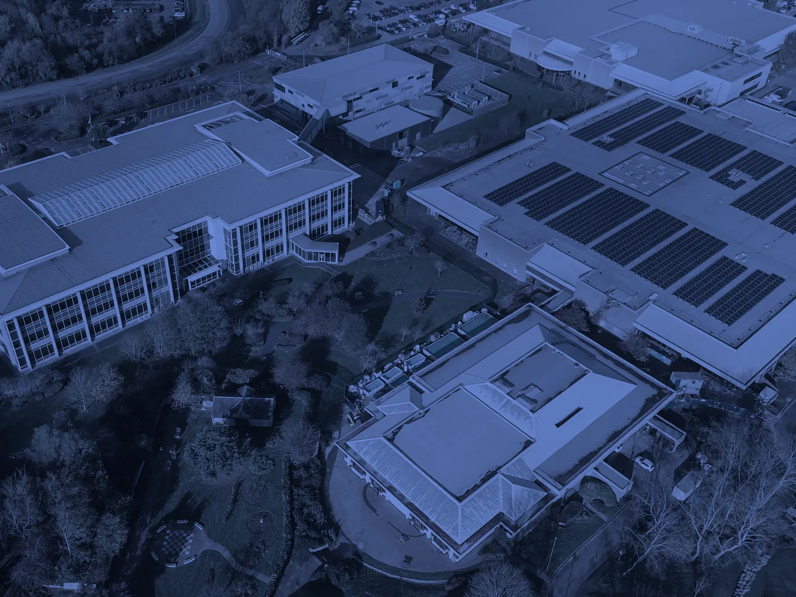
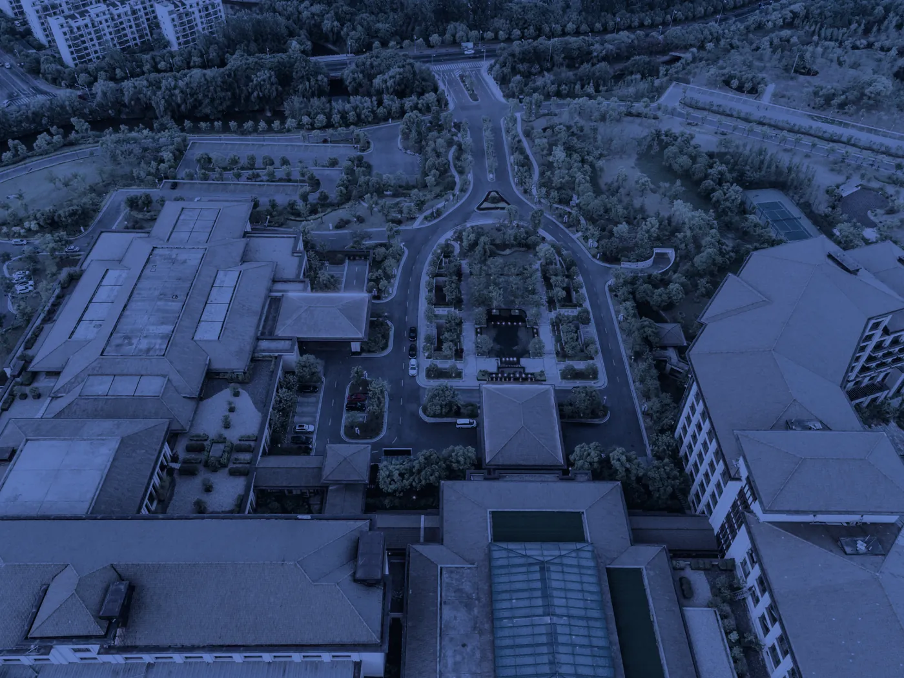
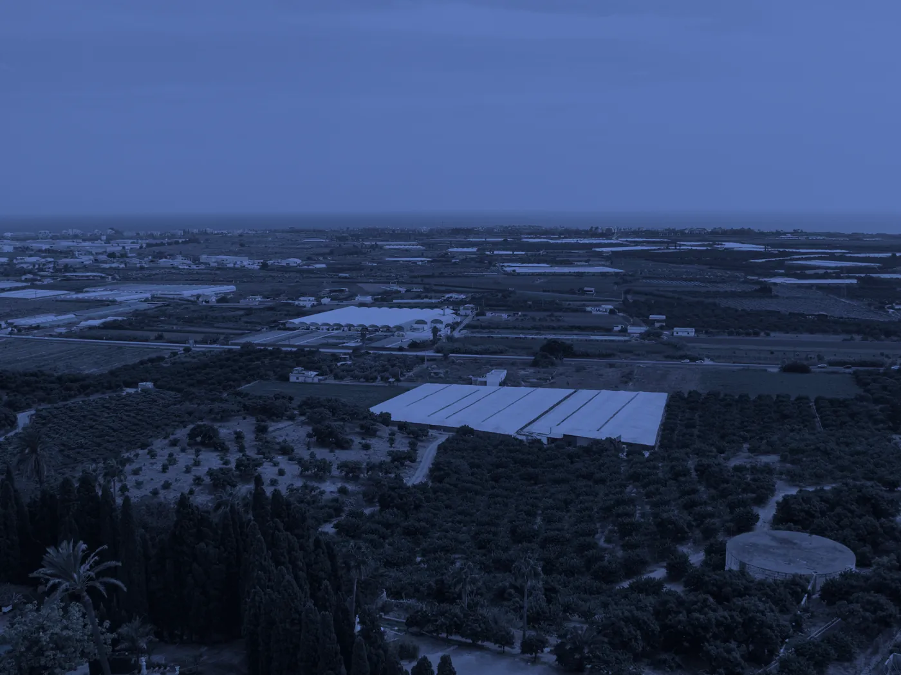

לא רק מיצרים אנרגיה, מנהלים אותה.
מערכות אגירת אנרגיה מאפשרות לנהל את האנרגיה בצורה חכמה וגמישה יותר, לנצל אותה בזמן הנכון ולייצר הזדמנויות כלכליות חדשות.
אנו בטרינרג'י יוזמים, מקימים ומנהלים מערכות אגירה במתח נמוך ובמתח גבוה, החל מפתרונות לעסקים ומבנים מסחריים ועד לפרויקטי אגירה רחבי היקף.
בדוק האם הנכס שלך מתאיםסוגי מערכות אגירה
אגירה משולבת סולארי
מקסום הערך מהמערכת הסולאריתשילוב סוללות אגירה במערכת סולארית חדשה או קיימת, מאפשר להעביר אנרגיה משעות הייצור לשעות שבהן הערך שלה גבוה יותר וכך למקסם את פונציאל הרווח.
אגירה לצריכה עצמית (BTM)
לנהל את האנרגיה מאחורי המונהמערכת סוללות אגירה "מאחורי המונה" המותאמת לפרופיל הצריכה של הנכס. אוגרים בשעות ה"שפל" ומשתמשים בשעות ה"שיא" וכך מנהלים עומסים, מנצלים חכם יותר את האנרגיה וחוסכים כסף רב.
אגירה מסחרית
אגירה בהיקפים גדולים כחלק ממשק האנרגיהמערכות אגירה בקנה מידה מסחרי, העמודות כמתקן עצמאי או בשילוב מקור ייצור סולארי. מערכת המאפשרת לייצר נכס אנרגטי משמעותי שמגיב לצרכי הרשת והמשק.
למי זה מתאים?
 מערכות סולאריות קיימות
מערכות סולאריות קיימות
מרכזי קניות
קניונים
מפעלים
מלונות- תחנות דלק

יישובים/רשויות
היתרונות של מערכת אגירה
מקסום הערך הכלכלי
אגירה מאפשרת לנהל את האנרגיה בהתאם למחירים, לתעריפים ולתנאי השוק, ולממש אותה בזמן שבו הערך שלה גבוה יותר.
חוסן ורציפות אנרגטית
בתכנון המתאים, אגירה מאפשרת גיבוי והמשכיות תפעולית, מפחיתה את התלות ברשת ומחזקת את הביטחון האנרגטי של הנכס.
גמישות אנרגטית
היכולת להפריד בין מועד הייצור, הצריכה וההזרמה מאפשרת להגיב בזמן אמת לצורכי הנכס ולשינויים במשק החשמל.
אופטימיזציה של התשתית
ניהול עומסים באמצעות אגירה מאפשר למצות טוב יותר חיבורים ותשתיות קיימות, ובמקרים המתאימים לצמצם או לדחות השקעות בהגדלת תשתית החשמל
התהליך לאגירת אנרגיה
- שלב 01
בדיקת היתכנות ראשונית
בשלב הראשון נבדוק את התאמת הנכס לשילוב אגירה, נבחן את חיבור החשמל, הצריכה ונאפיין את סוג המערכת הנדרשת.
- שלב 02
תהליך רישוי וחשמל
אנו נחל בתהליך רישוי מול חברת החשמל והרשויות הנדרשות על מנת להסדיר את המערכת שלכם בהתאם לרגולציה.
- שלב 03
תכנון הנדסי וסגירה פיננסית
מיטב המהנדסים והכלכלנים שלנו יערכו תכנון מקיף למערכת האגירה ותכנון כלכלי על מנת שהמערכת תהיה מדויקת לפרופיל הנכס והלקוח.
- שלב 04
הקמת המתקן וחיבור לרשת החשמל
ניהול ופיקוח מלא על כל שלבי ההקמה, תוך הקפדה על איכות ביצוע גבוהה, עמידה בסטנדרטים הנדסיים מחמירים ובקרת איכות שוטפת עד להפעלה מסחרית של הפרויקט.
- שלב 05
ניטור, ניהול ותחזוקה
מעקב שוטף אחר ביצועי המערכת, ביצוע תחזוקה ואופטימיזציה של ביצועי המערכת לאורך שנות הפרויקט.
תנו למומחים שלנו לבדוק אם ניתן לשלב אגירה בנכס שלכם
בדיקת היתכנות ללא עלות בליווי הצוות המקצועי של טרינרג'י כדי להבין את הפוטנציאל, החלופות והכדאיות לקידום פרויקט אגירה בנכס שבבעלותכם.